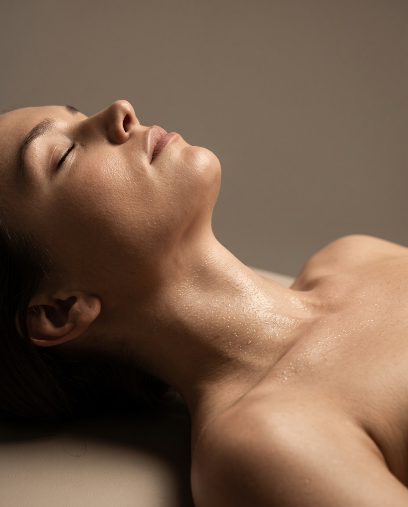

Oczyszczanie wodorowe w Płocku – głębokie oczyszczanie i odmłodzenie skóry
Nowoczesny, nieinwazyjny zabieg wykorzystujący aktywny wodór — dotlenia, dogłębnie oczyszcza i odświeża skórę, redukując zaskórniki, rozszerzone pory i nierównomierny koloryt.
Cena już od:
299
zł
Dostępne dla tego zabiegu na recepcji w salonie
Zabiegi Hi-Tech
Oczyszczanie wodorowe w Płocku – jak działa i dla kogo jest ten zabieg?
Od miesięcy walczysz z powracającymi zaskórnikami, rozszerzonymi porami albo z trądzikiem i nic nie pomaga? Problem może tkwić głębiej, a jego przyczyna może być bardzo prosta — zanieczyszczenie skóry. Oczyszczanie wodorowe sprawia, że Twoja skóra staje się dotleniona, dogłębnie oczyszczona, odświeżona, wyraźnie młodsza i odżywiona.
Zabieg został stworzony dla każdego rodzaju cery, ale swoje szczególne działanie wykazuje w przypadku cery zanieczyszczonej, z zaskórnikami i rozszerzonymi porami. Sprawdzi się też w terapii szarej i zmęczonej skóry, przy nierównomiernym kolorycie, cerze tłustej oraz przy pierwszych oznakach starzenia.
FAQ
Najczęściej zadawane pytania
Czy zabieg jest bezpieczny i bezbolesny?
Tak — zabieg jest całkowicie nieinwazyjny i bezpieczny, wykonywany z parametrami dopasowanymi indywidualnie do Twojej skóry.
Kiedy zobaczę pierwsze efekty?
Dobroczynne efekty są widoczne już po pierwszej wizycie. Dla jeszcze lepszych rezultatów zaleca się serię 3–5 zabiegów, powtarzanych co 2–4 tygodnie.
Jak wygląda zabieg krok po kroku?
Kosmetolog zaczyna od peelingu kawitacyjnego, następnie wykonuje oczyszczanie wodorowe, a trzeci etap to intensywna infuzja tlenowa. Na koniec — dla odprężenia skóry — delikatny masaż twarzy i maska.
Jak przygotować się do zabiegu?
Na tydzień przed zabiegiem odstaw wszystkie metody złuszczające skórę — peelingi, kwasy, kremy złuszczające itd.
Co robić po zabiegu?
Przez 48h pozwól cerze odpocząć — zrezygnuj z makijażu, ale zabezpiecz skórę kremem z filtrem SPF 50. Unikaj też nagłych zmian temperatury — basenu, sauny i solarium.
Dla jakiego rodzaju cery jest ten zabieg?
Dla każdego rodzaju cery — szczególnie zanieczyszczonej, z zaskórnikami i rozszerzonymi porami, szarej i zmęczonej, tłustej oraz z pierwszymi oznakami starzenia.
Technologia aktywnego wodoru
Aktywny wodór. Głęboka moc, delikatna dla skóry.
Podstawą zabiegu jest aktywny wodór — najsilniejszy znany antyoksydant — wytwarzany przez wysokiej jakości generator z elektrodami tytanowymi powlekanymi platyną. Urządzenie usuwa z wody tlen oraz niekorzystne jony chloru, siarki i fosforu, nasycając ją aktywnym wodorem oraz korzystnymi jonami wapnia, magnezu i potasu — a następnie aplikuje je pod ciśnieniem, uzyskując przy okazji efekt peelingu naskórka.
Rdzeń technologii
Generator aktywnego wodoru
Elektrody tytanowe powlekane platyną zapewniają najwyższą czystość aktywnego wodoru — najmniejszego i najlżejszego pierwiastka, który z łatwością wnika w głąb skóry i neutralizuje wolne rodniki.
Aplikacja pod ciśnieniem
Głowica natryskowa
Aktywny wodór i korzystne jony trafiają w głąb skóry pod ciśnieniem, dając jednocześnie efekt peelingu zewnętrznych warstw naskórka.
Złuszczanie naskórka
Głowica peelingująca
Dedykowana głowica delikatnie złuszcza martwy naskórek, przygotowując skórę na głębsze etapy zabiegu.
Odżywcze jony
Wapń, magnez i potas
Woda zostaje nasycona korzystnymi jonami wapnia, magnezu i potasu, które dodatkowo odżywiają skórę i wzmacniają jej naturalną barierę ochronną.

Przejrzysty cennik
Proste ceny dopasowane do obszaru i wariantu.
Cennik dzieli się na wariant Podstawowy i Premium oraz obszar zabiegowy — a cena i czas trwania są znane od razu, bez ukrytych kosztów i niespodzianek podczas płatności.
Wskazania do zabiegu
Ten zabieg pomoże, jeśli zależy Ci na:
Oczyszczeniu skóry z toksyn i zanieczyszczeń środowiskowych
Redukcji wydzielania sebum i niedoskonałości cery
Oczyszczeniu i domknięciu porów
Wyrównaniu kolorytu skóry i redukcji przebarwień
Złagodzeniu stanów zapalnych i zmian trądzikowych
Poprawie gęstości i jędrności skóry
Głębokim nawilżeniu i dotlenieniu skóry
Cennik
Ile kosztuje oczyszczanie wodorowe w Płocku?
Cena zależy od wariantu (Podstawowy lub Premium) oraz obszaru zabiegowego. Poniżej sprawdzisz dokładny cennik.
Konsultacje
Pakiet PowitalnyPromocja
149 zł
Dermokonsultacja · 35 min
149 zł
ZarezerwujPrezent na start: jeśli po konsultacji zdecydujesz się na rekomendowany zabieg (w tym samym dniu lub w ciągu 14 dni), cała kwota 149 zł zostanie odliczona od jego ceny. Ekspercki plan opieki otrzymujesz w prezencie!
Wizyta kontrolna · 15 min
0 zł
Zabieg
od 299 zł
Podstawowe - twarz · 45 min
299 zł
ZarezerwujPodstawowe - plecy · 45 min
349 zł
ZarezerwujPodstawowe - twarz + szyja + dekolt · 1 godz. i 25 min
399 zł
ZarezerwujPremium - twarz · 1 godz. i 15 min
399 zł
ZarezerwujPremium - twarz + szyja + dekolt · 1 godz. i 25 min
499 zł
ZarezerwujZalecenia zabiegowe i przeciwwskazania
Postępowanie przed i po zabiegu
- Ciąża
- Karmienie piersią
- Aktywna opryszczka
- Przyjmowanie antybiotyków
- Na tydzień przed zabiegiem odstaw wszystkie metody złuszczające skórę — peelingi, kwasy, kremy złuszczające.
- Przez 48h po zabiegu pozwól cerze odpocząć — zrezygnuj z makijażu, ale zabezpiecz skórę kremem z filtrem SPF 50.
- Unikaj nagłych zmian temperatury — zrezygnuj z basenu, sauny i solarium.
- Dla najlepszych efektów wykonaj rekomendowaną serię 3–5 zabiegów, co 2–4 tygodnie.